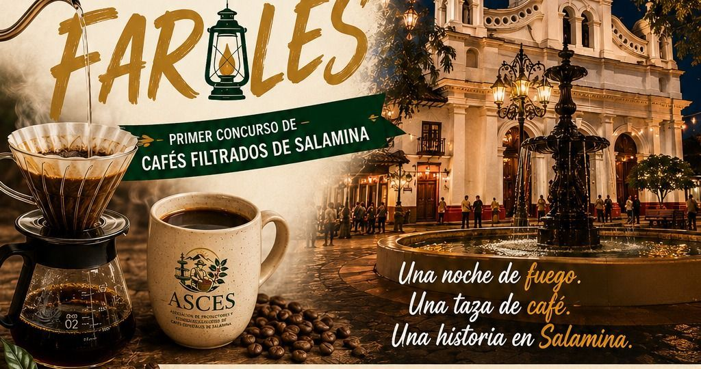
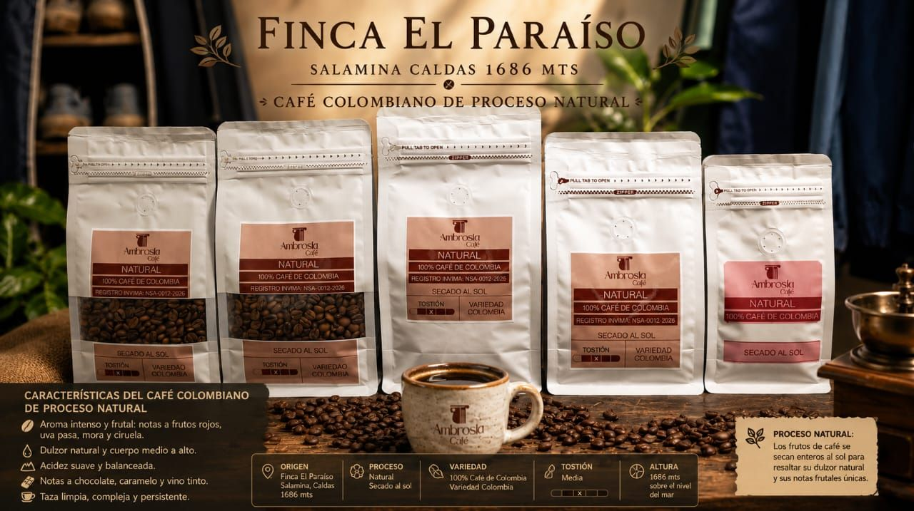
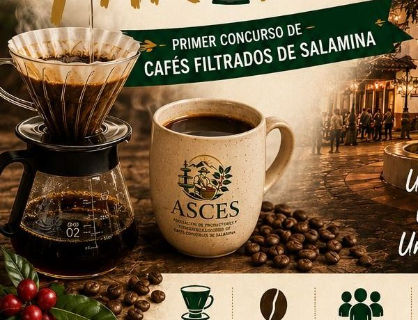

Inicio / Blog
Blog del café de Salamina
Noticias de la asociación, guías para disfrutar mejor tu café y las historias de quienes lo cultivan.

Entre Filtros y Faroles: así será el primer concurso de cafés filtrados de Salamina
El 7 de diciembre, en plena Noche del Fuego, el Parque de Bolívar se llena de V60, microlotes y aficionados. Te contamos cómo participar.

Lavado, honey o natural: qué cambia en tu taza según el proceso
El mismo grano puede saber muy distinto según cómo se procese después de la cosecha. Una guía corta para elegir mejor tu café de Salamina.

Cómo preparar café en V60 en casa, paso a paso
El V60 es el método oficial de Entre Filtros y Faroles. Con esta receta sencilla puedes practicar en casa con cualquier marca de la asociación.